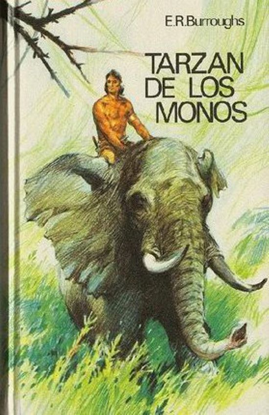

SOBRE TARZAN
Tarzán de los monos de Edgar Rice Burroughs se publicó en 1912,
el mismo año que el Titanic chocó con un Iceberg.
Es un libro entretenido y lleno de aventuras. La historia realmente cambia bastante
de lo que se ha visto en pantalla. Algo parecido a lo que me ocurrió cuando leí
“ Dracula de Bran Stoker.
ACTORES
Muchos actores han interpretado al hombre mono pero sin duda el que ha marcado a todos es johnny weissmuller.

SERIES DE TV
Serie de televisión no le ha faltado al personaje. Mis retinas recuerdad la del año 1991 con un Tarzan con botas y una Jane de lo mas moderna.

LIBROS
Sin los libros de Edgar Rice Burroughs no hubieramos conocido a Tarzan. Libros llena de aventura que se inspiro en el libro de la selva.
